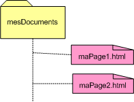
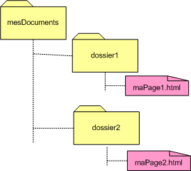

href: chemin relatif - chemin absolu
Introduction
Dans la balise <a>, on doit
spécifier l'adresse de la ressource du lien (hyperlink
reference - href). Cette adresse peut
prendre plusieurs formes: relative ou absolue.
Un chemin relatif est un chemin qui dépend de
l'élément de départ tandis qu'un chemin
absolu est le chemin complet de l'élément.
Petit exemple, si vous êtes au métro et
qu'on vous demande le chemin de l'IPL, vous pouvez soit expliquer le
chemin à partir du métro, genre "tout droit puis
à gauche", soit vous dictez l'adresse complète de
l'école "clos chapelle aux champs 43 à 1200
Bruxelles". Si vous indiquez le chemin à partir du
métro (gauche, droite, etc), vous faites de l'adressage
relatif car votre explication dépend de votre point de
départ. Si vous détaillez l'adresse de l'école,
vous faites de l'adressage absolu car il s'agit de la position de
l'école peu importe votre position à vous.
En informatique, c'est plus ou moins la même
chose, il y a le chemin relatif et le chemin absolu. En bref,
une adresse de la forme suivante "unePage.html" est un chemin
relatif; effectivement, le navigateur cherchera la page
"unePage.html" dans le dossier courant, càd le dossier dans
lequel se trouve la page à partir de laquelle le lien est
effectué. Par contre, l'adresse de la ressource
"http://www.ipl.be" est un chemin absolu.
On utilise des chemins relatifs pour faire des liens vers des
pages du même site Web, alors qu'on utilise des chemins
absolus pour faire des liens vers d'autres sites.
Le chemin absolu
Pour référencer un site, càd pour faire un lien
externe, il faut préciser l'adresse (ou URL) complète
et exacte de ce site. L'adresse complète, càd le
protocole à utiliser pour les atteindre (http, ftp, ...), le
nom du serveur qui les héberge, le chemin d'accès sur
le serveur, et enfin leur nom. Ce point est détaillé
plus tard dans la section intitulée "Mettre un site en ligne".
Par exemple pour obtenir la page du département informatique
du site de l'école, il faut utiliser l'url suivante :
"http://www.ipl.be/orientations/programme_bachelier_en_informatique_de_gestion".
Effectivement, si vous encodez le lien
<a
href="http://www.ipl.be/orientations/programme_bachelier_en_informatique_de_gestion">
département informatique de l'école</a>, vous
obtenez le lien suivant : département
informatique de l'IPL.
Le chemin relatif
Un chemin relatif permet de créer un lien entre fichiers d'un
site (dit lien interne). Il s'agit d'un lien qui connecte
des fichiers situés sur un même serveur web. Il n'est
pas utile, pour relier ces fichiers, de préciser leur adresse
(ou url) complète. En adressage relatif, le chemin du
fichier visé est établi à partir du dossier du
fichier appelant (celui dans lequel on a inséré le
lien). L'adressage relatif se résume alors à sa plus
simple expression puisque, pour relier deux fichiers se trouvant
dans le même dossier, l'adresse à mentionner
correspondra tout simplement au nom du fichier visé.
Souvent il est nécessaire de spécifier un chemin parmi
les dossiers pour accéder au fichier désiré. Si
celui-ci se trouve dans un dossier contenu dans le dossier du
fichier source ou dans un sous-dossier ou un sous-sous dossier ... ,
il suffit de mentionner tous les dossiers séparés par
"/" ainsi que le fichier à lier. Parfois le fichier
à référencer se trouve dans un dossier en
dehors du dossier courant, il faut alors aller dans le dossier au
dessus (ou celui encore au dessus) pour retrouver la ressource.
Lorsqu'on remonte d'un niveau, on va vers le dossier parent.
Et en informatique, un dossier n'a qu'un dossier parent.
Pas besoin donc de dire où on va quand on remonte d'un
niveau, on remonte toujours chez son parent, c'est tout. Cette
opération est traduite par ../ Si on doit remonter
de 2 niveaux (chez le grand-parent) on aura ../../ Si on a trois
niveaux ../../../ etc.

Par exemple, le dossier mesDocuments contient deux fichiers :
maPage1.html et maPage2.html (voir ci-contre). Pour créer un
lien à partir du fichier maPage1.html vers maPage2.html, il
suffit de référencer la page du lien, càd
maPage2.html puisque les deux fichiers se trouvent dans le
même dossier. Concrètement, pour insérer un lien
dans maPage1 vers maPage2, on écrira l'élément
suivant: <a href="maPage2.html">un
lien vers maPage2</a>.

Prenons un exemple plus complexe, le dossier mesDocuments
contient deux dossiers: dossier1 et dossier2 comme montré
dans la figure ci-contre, à droite. Le dossier1 contient un fichier
maPage1.html et le dossier2 contient un fichier maPage2.html. Pour
créer un lien dans le fichier maPage1.html vers le fichier
maPage2.html, il ne suffit plus de mentionner maPage2.html car les
deux fichiers ne se trouvent pas dans le même dossier.
Comment faire?
L'adressage se fait relativement au dossier parent du dossier
courant; càd celui qui contient maPage1.html à partir
de laquelle le lien va être effectué. Il faut donc
remonter dans l'arborescence des dossiers jusqu'à trouver un
parent commun entre le fichier source et le lien.
Concrètement, pour insérer un lien dans maPage1
vers maPage2, on écrira l'élément suivant: <a href="../dossier2/maPage2.html">un
lien vers maPage2</a>.
Avantages de l'adressage relatif
Dans un site Web, le fait d'exprimer les liens de
manière relative et non absolue facilite la gestion de ce
site. Effectivement, mettre en ligne un site ainsi conçu ou encore
changer le site d'adresse sera similaire à un simple copier-coller.
Pourquoi?
Tout d'abord, sachez que les chemins absolus sont plus
difficiles à gérer: en cas de déplacement du site ou
encore changement de nom, il faut modifier toutes les URL. De plus,
une URL est beaucoup moins lisible qu'un chemin relatif car elle est
plus longue.
Ensuite, lors d'un transfert de fichiers sur le serveur de
l'hébergeur, il faudrait, en cas d'adressage absolu, modifier
toutes les URL puisque le site se trouvera dans un dossier dans un
autre espace mémoire.
Les autres attributs de <a>
La balise <a> peut être garnie d'autres
attributs que la source du lien. Outre les attributs déjà connus
comme id ou class, on
peut spécifier les attributs suivants:
title
On peut spécifier un attribut title
dans l'élément a qui permet de
donner une description textuelle de la page vers laquelle
mène le lien. Par exemple,
<a href = "http://www.ipl.be" title = "Le site de l'école vous informe sur le programme des cours.">
Le site de l'IPL</a>
Dans la plupart des navigateurs, l'attribut title
s'affiche dans une info-bulle qui apparaît lors du passage de
la souris au-dessus du lien. Pensez que les navigateurs pour les
mal-voyants lisent à haute voix la valeur que vous lui avez
donnée.
target
Par défaut, le navigateur se contente d'ouvrir le lien dans
la fenêtre courante. Si on désire que le lien soit
ouvert dans une autre fenêtre, il faut spécifier
explicitement dans l'attribut target
de <a> la valeur _blank.
Concrètement, pour créer un lien vers le site de
l'IPL qui s'ouvre à chaque fois dans une nouvelle
fenêtre, on précisera l'élément de la
manière suivante :
<a target = "_blank" href = "http://www.ipl.be">IPL </a>
_blank signifie qu'on ouvre une nouvelle
fenêtre à chaque fois. Si une page possède
plusieurs liens avec un attribut target qui vaut _blank,
à chaque click une nouvelle fenêtre s'ouvrira. Si on
désire que tous les liens d'une page s'ouvre dans la
même fenêtre, on peut donner une autre valeur à
l'attribut target et si tous les liens de la
page spécifient dans target cette
valeur, alors ils s'ouvriront tous dans la même fenêtre.
Par exemple, sur une page d'index de recette de cuisine, on
désire que lorsque l'utilisateur sélectionne une
recette, cette recette s'affiche dans une nouvelle fenêtre. Si
l'utilisateur sélectionne une autre recette, ce sera toujours
la même fenêtre qui sera utilisée. Pour ce faire,
on indique un target identique pour tous les éléments
a.
Par exemple :
| Le code de la page HTML : |
L'affichage par le navigateur : |
<p>En dessert au choix : </p>
<ul class="gateau">
<li><a target = "recette" href =
"http://www.marmiton.org/recettes/recette.cfm?num_recette=19586">
Brownies au chocolat</a></li>
<li><a target = "recette" href =
"http://www.marmiton.org/recettes/recette.cfm?num_recette=11363">
Cake aux amandes et miel</a></li>
<li><a target = "recette" href =
"http://www.marmiton.org/recettes/recette.cfm?num_recette=21900">
Des bananes flambées</a></li>
</ul>
|
|